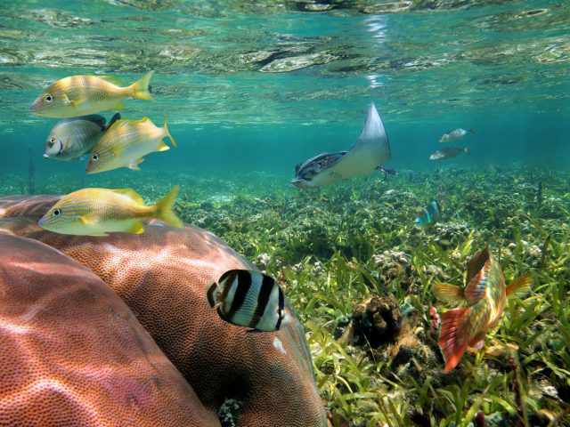

En este espacio se verán algunos de los lugares turísticos más enblemáticos de Panamá
entre ellos están:
Panamá la vieja
La antigua ciudad de Panamá, mejor conocida como "Panamá la Vieja", fue fundada por Pedro Arias de Ávila el 15 de agosto de 1519
, hace más de 504 años, y se convirtió en las más antiguas de las capitales
El Biomuseo
El Biomuseo, que abrió sus puertas en 2014, es un centro de interpretación dedicado a la variedad de la vida en uno de los lugares
más biodiversos y geológicamente significativos del mundo: el istmo de Panamá
Archipiélago de San Blas
Las islas San Blas son el hogar de una gran variedad de vida marina, desde tortugas y delfines, hasta rayas y tiburones
en este lugar se podrá disfrutar del buseo como también de una experiencia inolvidable explorando los arrecifes de coral
y observando la vida marina en su hábitat natural

El Canal de Panamá
La atracción turística más famosa de Panamá es su Canal, tanto que es una parada obligatoria para cualquiera que viaje al país.
Costruido para acortar el tiempo de viaje entre el océano Pacífico y el océano Atlántico, el canal de Panamá fue inaugurado el
15 de agosto de 1914, tras diez años de obras